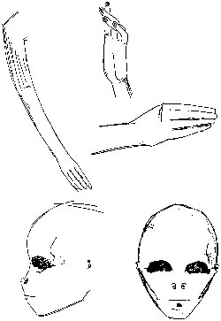

Il se souvient d'un épisode alors qu'il était à la faculté de la petite ville déserte de Roswell (Nouveau-Mexique)
: Le professeur tournait autour en nous demandant ce que nous voulions faire plus tard, et je ne saurai jamais
pourquoi, mais j'ai dit : je veux être croque-mort. Il obtint ce qu'il voulait : toutes les filles rièrent. Mais
Dennis ne réalisa pas que cette boutade allait sceller son destin, déterminer sa carrière d'entrepreneur de pompes
funèbres. On demande à Dennis d'écrire un texte sur ce métier. À sa surprise, il trouve le sujet fascinant, et peu
après, , commence à travailler à temps partiel au Ballard Funeral Home tout en
étudiant au lycée de Roswell. Une fois diplômé, exempté de service militaire à
la 2de guerre mondiale pour perte auditive, Dennis devient apprenti embaumeur à Ballard, travaillant pour mettre sa
sœur jumelle à l'école d'infirmières et d'économiser de l'argent pour entrer à la Faculté de Science Mortuaire de
San Francisco, d'où il sort diplômé .
Peu après son retour au Nouveau-Mexique et à son travail à Ballard, Dennis se marie et installe le ménage dans une
petite maison derrière le salon funèbre. Là, on le charge du travail contracté avec les militaires — service
ambulancier et mortuaire pour le Terrain Aérien de l'Armée de
Roswell d'à côté. Dennis arrange sa vie de "directeur funèbre du pays".
Incident de Roswell
Lors de l'été , les militaires lui auraient demandé des conseils sur la manière d'opérer avec des
corps très petits, et le tiennent vigoureusement à l'écart de l'hôpital lors de sa visite suivante Dennis.
Il aurait rencontré une infirmière à la base qui lui parle de corps qui sentaient très mauvais, aperçus
alors qu'ils étaient autopsiés par 2 médecins. Selon cette dernière, la peau des corps en question était de couleur
gris-brun, ils possédaient de grosses têtes sans cheveux avec des fentes à la place du nez, de la bouche et des
oreilles, et 4 doigts fins sans pouce. Après avoir rencontré Dennis à diverses reprises, l'infirmière disparaît
subitement, ayant apparemment décidé d'aller vivre en AngleterreDennis.
Lorsque Dennis tente de reprendre contact avec elle, son courrier lui est retourné avec la mention "décédée".
Dennis pense que des cadavres extraterrestres avaient été retrouvés sur le lieu de l'accident.
Révélations
Dennis rencontre Stanton T. Friedman, auquel il parle pour la
1ʳᵉ fois de l'activité étrange qu'il avait constaté à l'hopital de la base militaire lors de l'été
, et de corps d'êtres récupérés. Ses révélations sont publiées dans plusieurs livres Randle & Schmitt : UFO Crash at
Roswell, mi-1991< puis dans un 2ᵉ Berliner & Friedman: Crash at
Corona, 1992, The Truth About the UFO Crash at Roswell,
1994Carey & Schmitt : Witness to Roswell: Unmasking the 60-Year
Cover-Up, 2007.
Dennis dépose alors la déclaration sous serment suivante :
Mon nom est Glenn Dennis
Mon adresse est : XXXXXXXXXX
Je suis ( ) employé comme : __________________________________ ( ) à la retraite,
, j'étais entrepreneur de pompes funèbres, travaille pour la Maison Funèbre Ballard à
Roswell, qui avait un contrat pour fournir des services mortuaires au Terrain Aérien de l'Armée de Roswell. Un après-midi, autour
de 13 h 15 ou 13 h 30, j'ai reçu un appel de l'officier mortuaire de la base qui me demanda quelle était le
plus petit cercueil fermé hermétiquement que j'avais en stock. Il dit, "Nous avons besoin d'en connaître ça au
cas où quelque chose arrive dans le futur." Il demanda combien de temps cela prendrait d'en avoir un, et je
lui assurais que je pourrais lui en avoir un le jour suivant. Il dit qu'il rappellerait s'ils en avaient
besoin.
Entre 45 mn et 1 h plus tard environ, il rappela et me demanda de décrire la préparation de corps qui
étaient restés dehors dans le désert pendant une période de temps. Avant que je puisse répondre, il dit qu'il
voulait spécifiquement savoir quel effet les procédures de préparation auraient sur la composition chimique du
corps, le sang et les tissus. Je lui expliquais que nos composés chimiques étaient principalement des
solutions fortes de formaldehyde et d'eau, et que la procédure altèrerait probablement la composition chimique
du corps. J'offris de venir à la base pour aider à tout problème qu'ils puissent avoir, mais il réitéra que
l'information était pour un usage futur. Je suggérais que s'il avait une telle situation je m'efforcerais de
geler le corps dans de la glace pour stockage et transport.
Approximativement 1 h ou 1 h 15 plus tard, je reçus un appel pour transporter un homme en service qui avait
une lacération sur sa tête et peut-être un nez fracturé. Je lui donnais les premiers soins et le conduisis
jusqu'à la base. J'arrivais là-bas vers 17 h.
Bien que je fus un civil, j'avais habituellement un accès libre sur la base parce qu'ils me connaissaient.
Je conduisis l'ambulance alentour vers l'arrière de l'infirmerie de la base et la garais à côté d'une autre
ambulance. La porte était ouverte et à l'intérieur, je vis des débris. Il y avait plusieurs morceaux qui
ressemblaient au fond d'un canoe, d'environ 3 pieds de longueur. Cela ressemblait à de l'acier inoxidé avec
une teinte pourpre, comme s'il avait été exposé à une haute température. Il y avait des inscriptions à
l'apparence étrange sur le matériel ressemblant à des hiéroglyphes égyptiens. Egalement il y avait 2 MPs
présents.
I checked the airman in and went to the staff lounge to have a Coke. I intended to look for a nurse, a 2nd
Lieutenant, who had been commissioned about three months earlier right out of college. She was 23 years of age
at the time (I was 22). I saw her coming out of one of the examining rooms with a cloth over her mouth. She
said, Bon Dieu, sortez d'ici ou vous allez avoir de gros problèmes. She went into another door where a
Captain stood. He asked me who I was and what I was doing here. I told him, and he instructed me to stay
there. I said, "It looks like you've got a crash; would you like me to get ready?" He told me to stay right
there. Then two MPs came up and began to escort me out of the infirmary. They said they had orders to follow
me out to the funeral home.
We got about 10 or 15 feet when I heard a voice say, "On n'en a pas fini avec ce fils de pute. Ramenez-le."
There was another Captain, a redhead with the meanest-looking eyes I had ever seen, who said, "You did not see
anything, there was no crash here, and if you say anything you could get into a lot of trouble." I said, "Hey
look mister, I'm a civilian and you can't do a damn thing to me." He said, "Yes we can; somebody will be
picking your bones out of the sand." There was a black Sergeant with a pad in his hand who said, "He would
make good dog food for our dogs." The Captain said, "Sortez-moi ce fils de pute." The MPs followed me back to
the funeral home.
The next day, I tried to call the nurse to see what was going on. Vers 11 h 00, elle appela la maison
funéraire et dit, "J'ai besoin de te parler." We agreed to meet at the officers club. She was very upset. She
said, "Before I talk to you, you have to give me a sacred oath that you will never mention my name, because I
could get into a lot of trouble." I agreed.
She said she had gone to get supplies in a room where two doctors were performing a prelimary autopsy. The
doctors said they needed her to take notes during the procedure. She said she had never smelled anything so
horrible in her life, and the sight was the most gruesome she had ever seen. She said, "This was something no
one has ever seen." As she spoke, I was concerned that she might go into shock.
Dessin de Dennis, reproduisant ce que l'infirmière avait dessiné pour lui

Elle me dessina un diagramme des corps, including an arm with a hand that had only four fingers; the
doctors noted that on the end of the fingers were little pads resembling suction cups. She said the head was
disproportionately large for the body; the eyes were deeply set; the skulls were flexible; the nose was
concave with only two orifices; the mouth was a fine slit, and the doctors said there was heavy cartilage
instead of teeth. The ears were only small orifices with flaps. They had no hair, and the skin was
black--perhaps due to exposure in the sun. Elle me donna les dessins.
There were three bodies; two were very mangled and dismembered, as if destroyed by predators; one was fairly
intact. They were three-and-a-half to four feet tall. She told me the doctors said: This isn't anything
we've ever see before; there's nothing in the medical textbooks like this. She said she and the doctors
became ill. They had to turn off the air conditioning and were afraid the smell would go through the hospital.
They had to move the operation to an airplane hangar.
I drove her back to the officers' barracks. The next day I called the hospital to see how she was, and they
said she wasn't available. I tried to get her for several days, and finally got one of the nurses who said the
Lieutenant had been transferred out with some other personnel. Environ 10 jours à 2 semaines plus tard, je
reçu une lettre d'elle avec un numéro APO. Elle indiqua que nous pourrions discuter de l'incident par lettre
dans le futur. Je lui répondis et environ 2 semaines plus tard la lettre revint marquée "Retour à l'envoyeur
-- DECEDE." Plus tard, 1 des infirmières à la base dit que la rumeur était que elle et 5 autres infirmières
étaient une une mission d'entraînement et avaient été tuées dans un crash d'avion.
Le sheriff George Wilcox et mon père étaient des amis très proches. Le sheriff
se rendit à la maison de ma famille le matin suivant les événements à la base et dit à mon père, "Je ne sais
pas dans quel genre de problèmes s'est mis Glenn, mais tu dirais à ton fils qu'il ne sait rien et n'a rien vu
à la base." Il ajouta, "Ils veulent ton nom et celui de ta femme, et ils veulent vos adresses et celles de vos
enfants." Mon père se rendit immédiatement en voiture à la maison funéraire et me demanda dans quel genre
d'ennuis j'étais. Il relata la conversation avec le sheriff Wilcox, and so I told him about the events of the previous day.
He is the only person to whom I have told this story until recently.
I had filed away the sketches the nurse gave me that day. Récemment, à la demande d'un chercheur, j'ai
essayé de retrouvé mes archives personnelles au funeral home, but they had all been destroyed.
Je n'ai pas été payé ni n'ai reçu rien de valeur pour faire cette déclaration, qui est la vérité du mieux
que je m'en souvienne.
Signé : Glenn Dennis Date:
Cette même année, il crée le International UFO Museum And Research Center de
de Roswell, qui ouvre en 1991-09.
il regarde l'émission Unsolved Mysteries consacrée à l'incident de Roswell et les appelle pour leur confirmer les
rumeurs de cadavres extraterrestres à la base de Roswell.
Comment avez-vous été impliqué pour la 1ʳᵉ fois dans les événements connus sous le nom
d'Incident de Roswell ?
J'ai reçu un appel téléphonique de l'officier mortuaire du Terrain Aérien de l'Armée de Roswell le 7 juillet après
déjeûner, vers 13 h 30. Je n'ai aucune idée de qui c'était, mais il demanda si nous avions des cercueils pour
bébés, de 3 pieds 6 ou 4 pieds, fermés hermétiquement. Je lui dis que nous avions gardé un 4 pieds. Alors il
demanda combien nous en avions en stock. Je lui dis que nous en avions 2. Il demanda combien de temps cela
prendrait d'en faire plus. Je lui dis que si nous appelions la Texas Coffin Company à Amarillo d'ici 15 h,
nous pourrions les avoir par la Hill Truck Line à 6 h le matin suivant.
Vous a-t-il dit combien il en voulait ?
Non. J'ai juste dit, "Hey, qu'est-ce qui se passe ?" Et il dit, "Nous avons juste une
conférence ici sur le futur. Au cas où quelque chose arriverait, nous pourrions avoir en besoin de beaucoup."
L'appel vous a-t-il semblé inhabituel ?
Non, je n'y ai pas pensé jusqu'à plus tard. Nous avions ce type de demande tout le temps.
Mais alors, vous avez reçu un autre appel.
Environ 45 mn plus tard le même homme rappella. Il voulait connaître des choses sur le fluide
d'embaûmement : de quels éléments chimiques il était composé, que faudrait-il faire sur des corps qui étaient
restés dehors à l'air libre. Est-ce que cela changerait le contenu de l'estomac ? Est-ce que cela changerait
les tissus, le sang ? Il voulait également connaître nos procédures pour enlever des corps d'un site et pour
préparer les corps qui étaient restés dehors dans les éléments et qui pourraient avoir été déchiquetés par des
prédateurs.
A-t-il dit qu'il avait des corps qui étaient dans ces conditions ?
Non, juste que l'information était pour référence future. Il voulait également savoir, s'ils
transportaient un corps dans ces conditions et sans embaûmement, comment ils devraient le faire. À cette
époque, nous n'avions pas de [hearses] climatisés ou de pathologiste à Roswell. Donc je lui ai dit que j'irais au Crematorium Sunset Creamery
ou à Clardy's Dairy et acheterait toute la glace que je pourrais et les mettrait dedans. Je lui dis aussi, que
s'ils en avaient "un chaud" -- c'est-à-dire, s'ils ne savaient pas la cause de la mort -- ils feraient mieux
de contacter un pathologiste et de s'assurer de faire ce qu'il leur dirait. Je pense que je leur ai suggéré
d'essayer le Hopital Militaire Walter Reed à Washington (DC), parce que je me souvenais de crops de garçons du
coin qui étaient morts au service et nous arrivant par là. Je me souviens aussi lui avoir dit très poliment,
Vous nous donnez les spécifications, vous nous dites comment vous voulez que les corps soient préparés, et
nous les préparerons selon vos spécifications, pas les nôtres.
Qu'est-il arrivé ensuite ?
De bonne 45 mn ou 1 h plus tard, nous avons reçu un appel ambulance pour un aviateur blessé
sur une moto. Il avait une sale lacération sur le front, et je pense qu'il avait le nez fracturé. Je mis un
tourniquet sur son front, le mis sur le siège avant du combiné hearse-ambulance avec moi, et le conduisit à la
base. Dans des urgences comme ça, nous allumions le gyrophare rouge à environ 1 bloc de la porte d'entrée, et
ils nous laissaient entrer.
Après être arrivé sur la base, qu'avez-vous fait ?
La rampe d'accès devant l'hôpital
Je suis allé directement à l'infirmerie. Lorsque j'ai tourné dans l'allée, il y avait 3
vielles ambulances du Terrain de l'Armée backed up à un angle à la rampe où je me garais d'habitude, et 2 MPs
se tenaient entre elles. Donc j'ai roulé autoir jusqu'à l'extrêmité et me suis garé, et l'aviateur et moi
sommes montés le long de la rampe derrière les ambulances.
Qu'avez-vous vu alors que vous marchiez le long de la rampe ?
Lorsque nous sommes arrivés à la 1ʳᵉ ambulance, une des portes à l'arrière était ouverte -- et
lorsque vous êtes dans le métier, naturellement vous allez regarder. J'ai vu quelque chose là-dedans qui
ressemblait à un demi-canoë, penché vers le haut cotnre le côté près de la porte ouverte. Il tenait sur son
extrêmité, et j'en étais très proche. Il faisait environ 3, 3 1/2, peut-être 4 pieds de haut. Tout autour de
la base de ce truc, partout sur le plancher, il y avait beaucoup de débris. Tout était acéré, autant que je
peux m'en souvenir, c'était comme des vitres brisées. Certains des morceaux et le "canoë" avaient un air
d'acier inoxydable placé à haute chaleur. Il s'ombrageait de très brillant à rose, à rouge, à marron, puis
noir.
Y avait-il des inscriptions ?
Je me souviens d'inscriptions sur la chose en forme de canoë, atour du bord extérieur, le long
de la courbe, et en bas d'un côté. Elles faisaient 4 pouces de haut environ, plus sombres que le fond et
étaient clairement placées là délibérément.
Vous avez dit que les symboles vous avaient rappelé les hiéroglyphes égyptiens.
Lorsque j'étais à l'école mortuaire, nous avions étudié la momification et les pratiques
d'enterrement et coûtumes égyptiennes. Les corps qu'ils ramassaient dans les rues arrivaient sur une barge
funéraire, qui était poussée vers la mer et embrasée. Il y avait toujours une décoration sur le côté de la
barge, un cygne blanc ou une panthère. Après que j'ai eu un moment pour y penser, je réalisais que ce que
j'avais vu ressemblait aux décorations qu'ils mettaient autour des cous de ces figures animales.
Avez-vous vu autre chose dans les autres ambulances ?
J'ai vu le même type de débris dans la 2de. Les portes étaient fermées sur la 3ᵉ ambulance, et
donc je n'ai pas pu voir ce qu'il y avait à l'intérieur.
Est-ce que le soldat blessé a vu le matériel, aussi, et est que les MPs ont fait quelque
chose concernant votre [snooping] ?
Les MPs ne m'ont même pas regardé, autant que je sache. Ils pourraient bien même être partis à
ce moment. Ce n'était pas comme s'ils le gardaient. L'aviateur a vu les débris, aussi, mais il était plus
préoccupé par ses blessures. Je l'ai suivi dans l'infirmerie.
N'avez-vous pas eu à signer son entrée, faire quelque paperasserie pour être payé ?
Pour être payé, vous deviez obtenir un voucher signé par quelqu'un qui se trouvait au bureau
d'accueil, mais ils l'emmenèrent, et je n'eus jamais son nom en bas ou quoi que ce soit de signé. Ce n'était
pas grave parce que le travail d'ambulance business était tellement mineur, plus un genre de bonne volonté
qu'autre chose.
Après qu'il ait été emené au loin, qu'avez-vous fait ?
J'ai commencé à descendre le hall vers la zone de détente pour prendre un Coke. Il y avait
beaucoup de commotion, beaucoup d'officiers -- 2 ou 3 d'entre eux des femmes -- virevoltant en haut et en bas
dans le hall, mais je ne connaissais aucun d'entre eux. Il y avait un officier, un capitaine -- Je me souviens
avoir vu ses barres -- se penchant à côté d'une vers une porte ouverte. Je pensais qu'il parlait à quelqu'un à
travers la porte. J'arrivais jusqu'à lui et demandait, Monsieur ? Il se retourna, et je dis, On
dirait que nous avons un crash d'avion. Est-ce que je dois m'en retourner et me préparer pour ça ?
Le capitaine n'était pas quelqu'un que vous connaissiez.
Je ne l'avais jamais vu avant. Il me regarda et dit, Qui diable êtes-vous ? Je me
souviens bien de ça. C'était un vrai [snotty]. Je lui ai dit que je venais de la maison funèbre, que nous
avions un contrat avec la base et dit à nouveau on dirait que vous avez un crash. Il dit, Ne bougez
pas d'ici, ne faites pas un pas, puis s'éloigna. Après quelques minutes, il revint avec 2 MPs, qui
m'étaient étrangers. Il leur dit, "Emenez cet homme hors de la base. Il est hors des limites. Vous le ramenez
en ville, assurez-vous qu'il retourne là-bas." Et donc ils se mirent à me racompagner le long du hall.
Vous ont-ils physiquement molesté comme cela a été rapporté ?
Oh, non. Ils ne me bousculaient pas ou quoi que ce soit. Ils étaient très gentils. Mais alors
que nous n'avions fait que quelques pas une voix dit, "Ramenez ce fils de pute ici." Nous fîmes demi-tour et
il y avait ce grand capitaine roux, d'environ 6' 3 ou 4 avec une coupe militaire vraiment très courte et les
yeux les plus inexpressifs que j'aie jamais vus, comme le diable lui-même me regardant. Il avait avec lui un
sergent noir qui tenait une planche de notes.
D'où venaient-ils ?
Quelqu'un était parti et les avait amenés, je suppose. Quoi qu'il en soit, le capitaine arriva
vers moi et pointa un doigt son ma poitrine et dit, "Ecoutez, monsieur, vous n'allez pas à Roswell commencer
un lot de rumeurs qu'il y aurait eu un crash. Rien n'est arrivé ici, vous comprenez ?" Et il continuait à me
pointer. Bien sûr, je commençai à être un peu en colère. Je dis, "Je suis un civil et vous ne pouvez pas me
faire ce que vous voulez. Vous pouvez aller au diable !" C'est là qu'il me [jabbed] à nouveau et dit,
"Quelqu'un ramassera vos os dans le sable." Puis le sergent dit, "Monsieur, il ferait mieux de la nourriture
pour chiens." Alors j'ai [popped off at him], aussi. Puis le capitaine dit, "Emenez le fils de pute hors
d'ici," et les MPs se mirent à me ramener à travers le hall à nouveau. C'est là que j'ai vu l'infirmière.
C'était votre amie, une infirmière de l'Armée affectée à l'infirmerie de la base ?
Oui. Elle sortait d'une salle de fournitures à notre gauche, juste devant nous, et il y avait
2 hommes qui arrivaient derrière elle. Elle avait une serviette sur son visage. Elle regarda en l'air et me
vit, et elle s'exclama, "Glenn ! Sort de là aussi vite que tu peux !" Elle sanglotait, cherchant de l'air, et
elle partit à travers le hall, à travers une autre porte. Les 2 hommes la suivirent. Ils cherchaient de l'air
aussi et avaient l'air d'être prêts à vomir.
Avez-vous senti ou vu quelque chose qui pourrait les avoir rendus malade ?
Je ne me souviens pas avoir senti ou vu quelque chose d'étrange. Lorsque les MPs sont sortis
avec moi, un d'entre eux se retourna et dit : "Qu'est-ce que c'est que tout ça ?" Nous rentrâmes jusqu'à la
maison funèbre, et ils m'avertirent de rester loin de la base pour le restant de la journée.
Qu'avez-vous fait alors ?
J'ai décroché le téléphone et essayé de rappeler l'infirmerie et les quartiers des infirmières
pour trouver ce qui se passait, mais je n'ai pas pu l'avoir. Personne ne répondait.
Lorsque vous êtes rentré chez vous, avez-vous parlé de quoi que ce soit à votre femme à ce
sujet ?
Non, je n'en ai parlé à personne, jusqu'à ce que mon père ne me laisse pas le choix.
Laissez-moi vous dire quelque chose. Je n'ai jamais mélangé ma famille ou mon foyer avec les affaires
funéraires. Je n'ai jamais discuté d'un corps, de funérailles, de noms ou quoi que ce soit. Lorsque je quittai
la maison funéraire, j'avais une vie différente. Mais le matin suivant, vers 6 h, le sheriff George Wilcox, un bon ami de mon père, arriva à la maison de ma
famille avec 1 de ses adjoints. George dit qu'il pensait que j'avais de gros problèmes à la base.
Il dit "Vous dites à Glenn, s'il sait quelque chose, de garder sa bouche fermée. Ils veulent les noms de tous
vos enfants, ils veulent savoir où ils sont nés, et ils veulent savoir où ils sont maintenant." Papa dit que
George était vraiment secoué, un panier d'œufs. Mon père pris sa
voiture et arriva à notre maison à côté de la maison funéraire aussi vite qu'il put. Il enfonça presque notre
porte en y frappant et me fit sauter du lit. Ce n'était pas beaucoup après 6 h 00. Je me levais et Papa et moi
sortirent dehors et je finis par lui dire ce qui était arrivé, juste comme ça s'était passé. Au début, il dit
que notre gouvernement ne ferait pas une chose pareille. Puis, il commença à y réfléchir. Il dit que je ne lui
aurais jamais menti -- sauf 2 fois quand j'étais enfant, et il était prêt à me tuer -- donc ce devait être
vrai. Alors il devint très en colère. Mais il dit qu'il n'en parlerait pas parce qu'il ne voulait pas que je
sois tué.
Avez-vous continué à essayer de contacter l'infirmière ?
J'ai appelé là-bas et ait finalement eu la communication, mais je ne l'ai pas eu elle. Ils
dirent qu'elle n'était pas en service. Plus tard ce matin-là elle m'appela, vers 10 h 30 ou quelque chose
comme ça. Elle dit qu'elle savait que j'avais essayé de la joindre, mais qu'elle avait été très malade. Puis
elle dit : "Mais j'ai à te parler." Elle pleurait.
Pourquoi pensez-vous qu'elle est venue vers vous au lieu de quelqu'un d'autre ?
Parce qu'elle m'avait vu à l'hopital et pensait que je savais quelque chose, je suppose. Quoi
qu'il en soit, j'ai suggéré le club des officiers, qui était à seulement 1 bloc de ses quartiers. Elle
accepta, et je conduisis droit jusqu'à là-bas. Elle m'attendait dehors, et nous entrèrent et allèrent au bar
parce que la salle à manger était fermée. Le lieu n'était pas occupé, mais nous prîment une table dans un coin
à l'arrière. Je lui demandais si elle voulait manger quelque chose, et elle dit que non. Elle pleurait, de
manière presque hystérique, avait mal au ventre et était blanche comme une ligne. Elle était en uniforme, mais
vraiment [disheveled]. Elle voulait savoir ce qui m'était arrivé. Je lui dis ce qu'ils m'avaient fait, mais
que je ne savais pas pourquoi. Elle dit, "Eh bien, je vais te dire pourquoi." Elle dit qu'elle découvrit plus
tard que toute l'équipe régulière de l'infirmerie n'était pas supposée to report for duty. Somehow she didn't
get the order, alors elle partit travailler comme d'habitude et alla dans la salle de fournitures pour prendre
les fournitures du jour. Lorsqu'elle le fit, il y avait 2 hommes, des docteurs, en masques chirurgicaux et
tout. Il y avait là 2 [gurneys], et il y avait un body bag sur chacun. Les 2 étaient ouverts. Les docteurs
étaient sur un gurney, avec le sac ouvert autour. Il y avait 2 petits corps mangled dans le sac. Elle dit que
l'odeur était la plus horrible, plus insoutenable qu'elle ait jamais sentie de sa vie. Les docteurs dirent
quelque sur sa toxicité, mais je ne peux pas dire ce que ça veut dire.
Est-ce que l'infimière a essayé de partir ?
Elle n'en eu pas l'occasion. Elle dit qu'ils lui avaient ordonné to come over and told her,
"Nous devons avoir de l'aide. Lieutenant, vous aller devoir prendre des notes pour nous, écrire ce que nous
regardons, ce que nous vous disons." Elle écrivit tout ce qu'ils dirent alors qu'ils examinaient les
corps.
Est-ce que l'infirmière savait qui étaient les docteurs ou d'où ils venaient ?
Je lui ai demandé, et elle a dit qu'elle ne les avait jamais vus auparavant. Elle me dit
qu'elle avait entendu un dire à l'autre qu'ils auraient à faire quelque chose lorsqu'ils reviendraient à
l'Hopital Militaire Walter Reed.
A-t-elle décrit les corps ?
Elle dit qu'une main était severed sur l'un des corps mangled, and they turned it over on a
long forceps. Il n'y avait que 4 doigts. Ils avaient de petits pads sur les tips with what looked like tiny
suction cups. Leurs bouches étaient juste des fentes, de 1 pouce de large. Il n'y avait pas de dents,
seulement un morceau de tissu ferme comme du cartilage. Une chose qui saisit son attention fut que là où nous
n'avons que 1 seul canal auditif, ils en avaient 2, mais ils n'avaient pas de lobes d'oreilles. Le nez était
concave, avec 2 orifices, mais sans bridge. Les yeux étaient très, très grands et sunken si loin en arrière
que vous ne pouviez pas dire à quoi ils ressemblaient. Si les corps had lain out for some time, the eyes
probably ruptured, mais elle dit que la structure osseuse montrait qu'ils étaient grands. Elle dit que les
têtes étaient d'une grandeur disproportionnée et les docteurs notèrent que la structure du crâne était
semblable à celle d'un nouveau-né : flexible. Elle dit également que l'os de l'épaule au coude était beaucoup
plus court que celui du coude au poignet.
A-t-elle dit quelque chose sur le corps le plus intact ?
Elle dit que, alors que les docteurs examaient les mangled ones, they would go over and look
at the other body, comparant les choses. Il faisait environ 3 pieds 1/2 à 4 pieds de haut. Elle dit qu'elle
l'avait regardé, et que c'était horrible, et elle se souvint que 1 des docteurs avait dit que les
caractéristiques lui rappelaient celles d'un Chinois vieux de cent ans. Alors ils furent tous malades et
eurent à quitter la pièce. C'est là que nous nous sommes rencontrés.
Elle prit des notes durant l'examen. Fit-elle aussi des dessins ?
Non. Elle fit cela cette nuit-là. Elle rentra chez elle et prit une douche, et d'autres
infirmières l'aidèrent, lavèrent ses cheveux et tout. Evidemment, l'odeur était si forte sur elle qu'elles ne
pouvaient stand it, either.
Pourquoi décida-t-elle de faire des dessins ?
Elle fit les dessins pour moi -- mais seulement après que j'ai fait un serment solennel que je
ne révèlerai jamais leur lien avec elle. Elle voulait savoir si j'avais vu les mêmes choses qu'elle avait
vues. Elle me demanda s'ils avaient apporté -- je pense qu'elle les appela les "créatures" -- à la maison
funéraire. Je lui dis que je n'avais pas vu les corps, qu'ils n'avaient pas été apportés chez Ballard.
What did she make the drawings on and with what? Were there any notations?
They were in pencil, and she did them on the back of a prescription pad. She said she didn't
have anything else to write on.
Qu'a-t-elle fait des dessins après vous les avoir montrés ?
Elle me les a donnés. Elle a dit qu'elle voulait que je les aie. Je pense peut-être que
c'était pour sa protection. Elle dit, Garde-les comme ta vie.
Avait-elle des informations sur ce qui était devenu des corps ?
Elle dit qu'il y avait une rumeur selon laquelle ils avaient été déplacés dans un hangar, où
les autopsies avaient été terminées cette nuit-là. L'infirmière-chef, je pense qu'il s'agissait du capitaine
Wilson, lui dit qu'ils avaient été envoyés par avion à la base Air Force de Wright-Patterson en Ohio.
Vous souvenez-vous de quelque chose d'autre qu'il vous a dit qui semblait important ?
Les docteurs dirent qu'il n'y avait rien dans les livres médicaux couvrant ce qu'ils avaient.
Elle also overheard them saying the bodies were found with or in some wreckage two or three miles from where
everything else was located.
Comment votre rencontre s'est-elle terminée ?
Elle a commencé à se sentit beaucoup plus mal. Je l'ai raccompagnée en voiture jusqu'aux
quartiers des infirmières vers midi, et ce fut tout.
Vous avez quitté la base avec ses dessins et ses notes. Qu'en avez-vous fait alors, et que
sont-ils devenus ?
Eh bien, je les ai cachés pendant une longue, longue période, puis les ai mis dans mes papiers
personnels et légaux dans le bâtiment de la maison funéraire. Lorsque j'ai fini par quitter Ballard
, j'ai laissé mes papiers derrière -- je n'aurai pas dû, mais je l'ai fait. Lorsque le
chercheur sur les ovnis Stan Friedman et moi arrivèrent à Ballard pour les rechercher
il y a quelques années, les coffrets étaient toujours là, mais vides. Tous mes papiers manquaient. Les
responsables là-bas maintenant nous dit que lui et un autre homme, Joe Lucas, avait tout nettoyé ; il dit que
Lucas avait tout emporté aux poubelles de la ville.
Pour en revenir à , après avoir rencontré l'infirmière, vous n'aviez pas de
doute que se passait quelque chose very much out of line. Quand avez-vous vu le journal avec l'histoire de
soucoupe capturée ?
Vers 6 ou 7 h cette nuit-là je rentrais pour écrire une nécrologie et le journal était posé
sur le bureau chez Ballard. Je le ramassais, vit le titre et pensais : "Peut-être que c'est ce dans quoi elle
s'est mise !"
Avez-vous discuté de la rencontre et de ce que l'infirmière vous avait dit avec votre père
ou quiconque d'autre ?
Je ne l'ai jamais mentionnée, point.
Quand avez-vous essayé de la contacter ?
J'ai continué d'essayer to get ahold of her. J'ai essayé pendant 2 ou 3 jours, et ils dirent
qu'elle n'était pas là ; then I went out to the base on call, peut-être 1 semaine à peu près plus tard, et le
capitaine Wilson me dit qu'elle had been shipped out the same afternoon I last saw her.
Le 8 juillet. Avez-vous entendu parler de l'infirmière plus tard ?
Environ 6 semaines, peut-être 2 mois plus tard je reçus une lettre dactylographiée. L'envelope
était adressée à la Maison Funéraire Ballard, pas à moi personnellement. La lettre était pour "Cher Glenn" et
n'avait pas de signature, juste son nom tapé. Elle avait un numéro APO de New York [adresse postale militaire
internationale] où je pouvais lui écrire. Il indiquait qu'elle était en Angleterre, n'avait pas le temps
d'écrire, mais que nous correspondrions et qu'elle voulait savoir ce qui m'était arrivé. Pour vous dire la
vérité, je ne pense pas qu'elle venait d'elle. Cela ne sonnait pas comme elle. Je pense que quelqu'un l'avait
écrite pour essayer de découvrir ce que je savais.
Avez-vous répondu.
I wrote saying I was glad to hear she was okay and, when she was ready, to write back. Another
six weeks or two months later that letter came back. Stamped on the front was "Return to Sender," and down at
the bottom, stamped in red, was the word "Deceased."
Qu'avez-vous fait des lettres ?
Je les ai gardées dans le même dossier que les notes et dessins que j'ai faits sur ce qu'elle
m'a donné, dans une grosse enveloppe marquée "Personnel." Longtemps après, je parlais au capitaine Wilson de
la lettre revenue et lui demandais si quelqu'un avait entendu parler de ce qui était arrivé à l'infirmière.
Elle dit que la rumeur était qu'elle était tombée avec un avion dans une mission d'entrainement et fut tuée
avec d'autres infirmières, mais vous chercheurs dites qu'il n'y a aucune archive d'un tel accident.
Exact, plusieurs enquêtes minutieuses n'ont rien révélé. Et maintenant vous semblez même
penser que l'infirmière n'est pas morte . Quand et pourquoi avez-vous changé votre idée, et
avez-vous essayé de la localiser depuis ?
C'était juste il y a quelques années. J'avais toujours espéré qu'elle fut vivante, mais ce
n'étaut pas avant que j'apprenne de Don Berliner, Kevin Randle, et Don Schmitt qu'il n'y avait aucune archive d'un crash d'avion
comme celui dans lequel elle avait été supposée être, que je pense vraiment qu'elle puisse être en vie. Je
n'avais pas essayé de la contacter parce que la manière dont nous nous étions quittés la dernière fois que
nous avions discuté était qu'elle me contacterait quand elle serait prête. Bien sûr, je ne sais pas où la
trouver de toute façon.
De nombreuses questions ont été soulevées quant à votre relation avec l'infirmière, même que
vous et elle avait envisagé le mariage.
Ce sont des conneries ! J'étais marrié, et elle et moi n'avions que des accointances amicales,
rien d'autre. Je n'étais pas après elle ou quoi que ce soit. Quand tout ceci est arrivé, elle était à la base
depuis environ 3 mois seulement, dans le service 7 environ. Elle avait 23 ans environ et était très mignonne
-- comme une petite Audrey Hepburn, avec des cheveux bruns et courts, des yeux sombres et une peau d'olive --
but kind of a loner, shy, didn't fit in. Mais je parlais avec elle chaque fois que je la voyais à
l'infirmerie, donc je devais en savoir un peu sur elle.
Pourquoi pensez-vous que l'infirmière et tout ce qui la concerne a disparu ?
C'est juste ma supposition, mais je pense que lorsqu'elle a été transferrée, they discharged
her and arranged pour qu'elle rejoigne un ordre, entrer dans un couvent. Tout a été dissimulé avec l'aide de
l'église.
Que pensez-vous qui fut vraiment derrière ce qui vous est arrivé ?
Qu'est-ce qui se passait vraiment ?
Comme je l'ai dit tout du long, je n'en n'ai aucune idée. Tout ce que je sais est ce qui m'est
arrivé est ce que l'infirmière m'a dit. Tout ceci est étrange. Si quelqu'un d'autre racontait mon histoire, je
n'y croirais pas.
Si vous vouliez vraiment garder cette histoire sous les wraps, pourquoi avez-vous commencé à
parler à des enquêteurs sur les ovnis en 1er lieu ? Comment ont-ils su que vous existiez ?
Je vous ai parlé de Joe Lucas jettant mes papiers. J'ai entendu qu'il parlait à quelqu'un d'un
collègue de ses collègues impliqués, sans mentionner son nom. C'était vers , je pense, et il
est mort aujourd'hui. Quoi qu'il en soit, si c'est vrai, alors peut-être a-t-il trouvé mon dossier avec les
dessins de l'infirmière alors qu'ils jetaient les choses. Peut-être est-ce comme ça que mon histoire à
commencer à filtrer et que Friedman a fini par me trouver.
Je ne sais vraiment pas. En tout cas, il m'a trouvé, et j'ai accepté de lui parler parce que Unsolved
Mysteries l'utilisait comme conseiller technique, et donc j'ai pensé qu'il savait ce qu'il faisait. Je
voulais avoir une vérification de mon histoire, mais sans publicité ou problèmes pour l'infirmière, et j'ai
pensé que ça pourrait être important.
Certains des sceptiques sur votre histoire ont mis en avant des incohérences dans les
diverses déclarations.
Lorsque j'ai parlé à Friedman, c'était la
1ʳᵉ fois que le tentait de me souvenir de l'ensemble de l'expérience en 40 ans ou plus. Je me souvenais out
loud, et j'ai fait des erreurs. C'est difficile de retrouver de tels vieux souvenir straight. Des choses se
sont mélangées dans des interviews par la suite, aussi. Les interviews me rendent toujours nerveux et les
journalistes mettent toujours les choses sur papier mal. Ce que je vous ai dit est mon histoire, prenez-la ou
laissez-là.
Vous avez fourni à certains chercheurs ce que vous dites être le nom de l'infirmière.
Pourquoi ?
Je voudrais savoir ce qu'elle est devenue et avoir quelqu'un qui vérifie mon histoire.
Il a été prétendu que vous aviez inventé le nom que vous aviez donné aux chercheurs.
Non, pas du tout. Je n'ai jamais fait ça.
D'autres ont suggéré que vous avez fourni le mauvais nom, ou peut-être un nom mal
orthographié, dû à une mémoire imparfaite. Est-ce possible ?
Oui, je suppose que c'est possible je n'ai pas son nom très clairement.
Plusieurs chercheurs ont tenté de localiser l'infirmière sous le nom de Naomi Maria Selff,
qui a été publié par le sceptique sur les ovnis Philip J. Klass.
Est-ce son véritable nom ?
Je lui ai promis que je ne révèlerai jamais son nom réel, donc je ne peux pas confirmer ou
nier. Si elle est toujours en vie, je ne veux pas qu'elle entre dans de nouveaux problèmes. Je ne veux pas
qu'elle ou sa famille soient ennuyées, non plus.
Quelqu'un qui pourrait conceivably confirmer votre histoire semble être mort. À l'évidence,
tant que vous refuserez de fournir le nom de l'infirmière afin qu'il puisse être pleinement et ouvertement
vérifié, les gens continueront de considérer votre histoire suspecte. Cela ne vous préoccupe-t-il pas ?
Cela ne fait pas la moindre difference pour moi. Ils peuvent le croire ou non.
Accepteriez-vous de donner à OMNI le véritable nom de l'infirmière afin que le magazine
puisse tenter de la localiser ?
Pour répondre à la 1ʳᵉ question : catégoriquement non, et j'ai déjà dit pourquoi. Si jamais
j'ai la preuve qu'elle est morte, je rendrai probablement son nom public ou le confirmerai.
Si vous pouviez refaire quelque chose concernant votre implication dans cet incident, que
feriez-vous ?
Je n'en parlerai jamais à personne ! Je resterai simplement muet et m'occuperai de mes
affaires. Je me suis senti mis sur la défensive, ridiculisé et traité de menteur pour avoir dit la vérité sur
ce qui est arrivé -- en particulier par des gens qui prennent juste des potshots sans faits pour les
étayer.
Si l'infirmière ou un membre de sa famille ou quelqu'un qui la connait lisait ceci, que
voudriez-vous lui ou leur dire ?
Au moment où est elle prête à me contacter, j'aimerais avoir de ses nouvelles. J'espère
vraiment qu'elle va bien.
On découvrira cependant que Dennis a donné un faux nom aux enquêteurs. Il le justifiera en disant avoir promis de
ne jamais révéler le nom [de l'infirmère] à quiconque.
Références :
Interview with Glen Dennis par Karl T. Pflock (OMNI
Magazine Vol. 17, No. 8, Automne 1995, pp. 100-105, 132)
[Pflock 1994] Roswell: Inconvenient Facts and the Will to Believe (1994)
(Prometheus Books, US, Juin 2001)